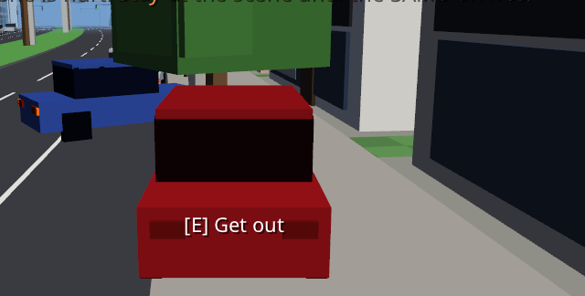
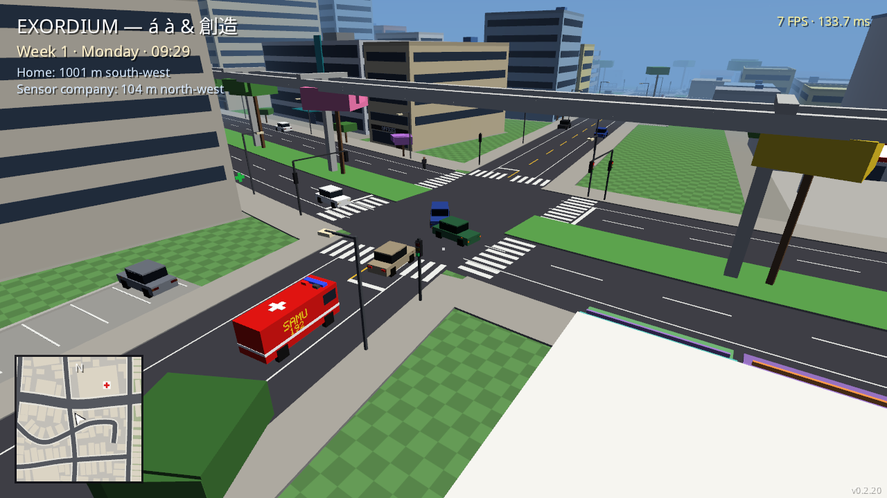
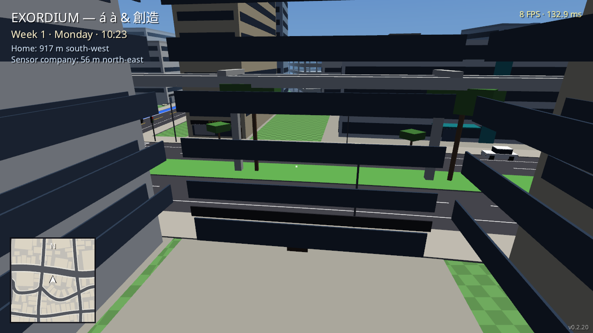

Crime, Castigo & Consequências Reais
Em EXORDIUM não existe polícia arcade que esquece seus crimes após você pintar o carro. O sistema judicial é impiedoso: atropelamentos com física ragdoll realista, multiplicadores de multa de até 90x por evasão, buscas policiais no seu local de trabalho e o imponente Cubo da Prisão no extremo sul da cidade.
A Escala Criminal em Tempo Real
As três etapas do código penal canônico após causar um incidente viário ou agressão:
[Potencial Criminoso]
Atribuído imediatamente após a colisão ou atropelamento. Se a vítima sobreviver e você permanecer na cena aguardando o socorro do SAMU 192, você responde apenas por danos civis e seguro.
[Fugitivo da Justiça]
Acionado instantaneamente se você se afastar mais de 20 metros da vítima antes do socorro! Se passar mais de 4 segundos na visão de uma viatura policial, é preso em flagrante sem direito a fiança ou audiência de custódia!
[Procurado Judicial]
A Justiça expede mandado de busca. A polícia vai revistar seu local de trabalho: se for funcionário de escritório, policiais revistam os prédios comerciais nos horários de expediente. Apps de corrida são bloqueados!

"Você atropelou um cidadão no cruzamento e acelerou para fugir? Pois saiba que o sistema registrou o impacto: sua multa foi multiplicada por 90! As viaturas já receberam o alerta da placa e temos agentes vigiando o ponto da sua empresa no centro!"
Atropelamento & Ragdoll Canônico
Desenvolvi a física de impacto corporal para ser visceral: "A colisão dos pedestres e o arremesso sobre o capô entregam exatamente a sensação tátil e o peso que sempre busquei para o jogo!"
| Velocidade Carro | Velocidade Bicicleta | Gravidade do Impacto | Dinâmica Corporal (Ragdoll) |
|---|---|---|---|
| Até 8 km/h | Até 20 km/h | Esbarrão Leve | O pedestre tropeça, cambaleia e reclama em voz alta. Sem atendimento médico. |
| 8 a 20 km/h | 20 a 28 km/h | Escoriações | Queda ao chão. Fica sentado por alguns segundos, sacode a poeira e levanta. |
| 20 a 40 km/h | Acima de 28 km/h | Ferimento Moderado | Permanece caído no asfalto. O SAMU 192 é acionado e os socorristas prestam curativos no local. |
| 40 a 60 km/h | — | Trauma Severo | O corpo é projetado por cima do capô e rola pelo teto. Remoção em maca para a emergência. |
| Acima de 60 km/h | — | Fatal / Júri Popular | 25% de óbito a 60 km/h e 100% certo aos 90 km/h. Sangue orgânico espirra no para-brisa e permanece por 3 dias! |
🚗 Segundo Impacto & Passar por Cima
Se o corpo arremessado bater em um poste ou muro acima de 30 km/h, o trauma sobe um nível de gravidade. Se o motorista passar com o carro por cima da vítima caída a mais de 10 km/h, o óbito é instantâneo e o caso é remetido para Tribunal do Júri popular!
O Socorro do SAMU 192 e o Guincho do Pátio

As Ambulâncias Vermelhas 192
Três ambulâncias de prontidão no Hospital Regional. Com a sirene ligada, furam sinais vermelhos e passam por cima de calçadas se necessário. Os motoristas civis desviam assustados para abrir passagem. Os socorristas descem com maca, estabilizam a vítima por 45 segundos e retornam com urgência.

O Caminhão Guincho do DETRAN
Assim que o SAMU libera o local de um acidente ou pane mecânica, o guincho plataforma entra pela borda da cidade. Embarca os carros destruídos e os transporta para o pátio de custódia na zona externa da metrópole.
O Cubo da Prisão (Inspirado em Hard Time)
Situado no extremo sul do mapa, após as casas simples da periferia, ergue-se o imponente Cubo da Prisão: uma fortaleza maciça de concreto de 56 metros de lado e 36 metros de altura cercada por muros de 5 metros e holofotes.
A prisão não é apenas uma tela de "Game Over". O jogador cumpre sua rotina atrás das grades, com dinâmica carcerária e possibilidade restrita e desafiadora de fuga.
Enquanto você está encarcerado, a Terra continua sob ameaça alienígena e o relógio das 24 semanas continua avançando implacavelmente!
Após solto, o histórico criminal bloqueia empregos de nível 2 ou superior até que o registro seja reabilitado.